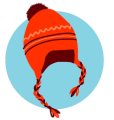

<mat-toolbar>

  <mat-toolbar-row class="sidebar-theme">
    <span class="center">
      
    </span>
  </mat-toolbar-row>

</mat-toolbar>

<mat-nav-list>

  <a mat-list-item routerLink="home">
    <mat-icon>home</mat-icon>
    <span class="navText">Home</span>
  </a>

  <a mat-list-item routerLink="profile">
    <mat-icon>assignment</mat-icon>
    <span class="navText">Create</span>
  </a>

</mat-nav-list>
